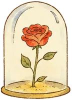

Option A
La cristallerie de Bayel
- 14h45 Arrivée sur place
- 15h Visite et démonstration de soufflage de verre
- 16h30 Fin, puis temps libre
Baptême civil
Du vendredi 21 au dimanche 23 août 2026
La Maison Bö · Bossancourt, Aube
Une petite planète, deux volcans, trois jours ensemble. Voici où être et quand.
16h
26 Grande Rue, 10140 Bossancourt. Les arrivées sont échelonnées, aucun horaire imposé : venez quand cela vous arrange.
Itinéraire
18h30
19h15
Cakes, salades, tartes fines aux pommes et glace vanille.
Soirée
10h20
À la Maison Bö. Discours des parents, dépôt des mots doux, signature du livre d'or par les parrains et marraines.
10h40
Photos, remise des cadeaux, toast, champagne et jus de pomme pétillant.
11h50
12h
81 route nationale, 10200 Arsonval.
Itinéraire
14h20
Deux possibilités, au choix de chacun.
18h30
19h15
Soirée
9h30
9h45
Parc d'attractions à Dolancourt. Les billets sont déjà pris et offerts : rien à régler sur place.
Itinéraire
12h
À l'entrée du parc. Repas à la charge de chacun.
Ensuite
Chacun repart quand il le souhaite, selon ses disponibilités.